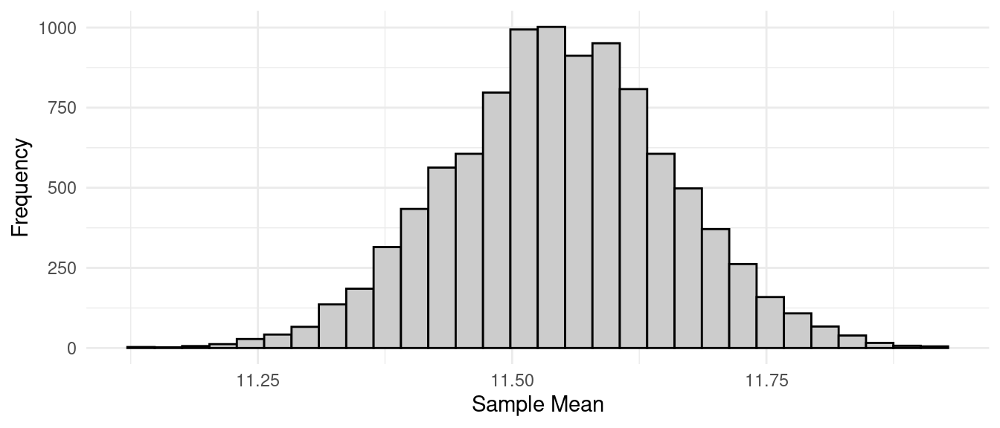
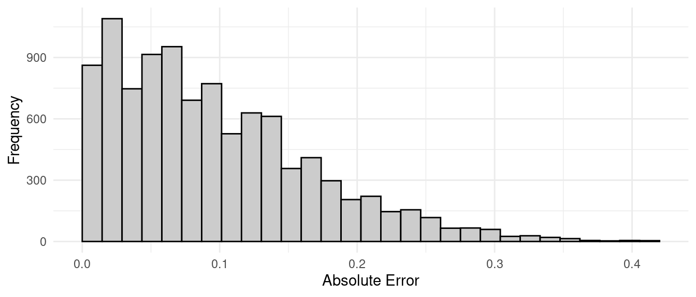
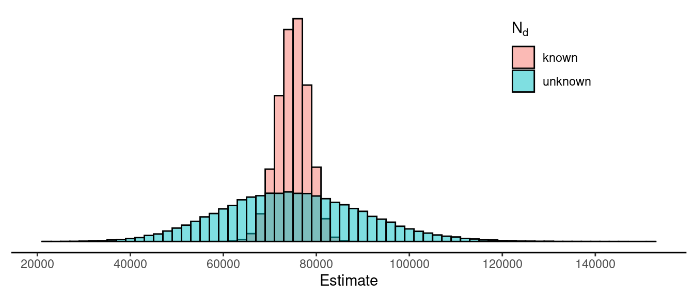

You can also download a PDF copy of this lecture.
Simulation studies can be used to study sampling distributions of estimators. They are an empirical “brute-force” approach that can be used when analytical results are difficult or impossible to obtain. They work by simulating a survey many times to generate an empirical distribution of the estimates that approximates the theoretical probability distribution.
Example: Consider a simple random sampling design with a population of \(N\) = 3000 elements/units (incarcerated men). The target variable is the length of the left middle finger in centimeters. The sample size is \(n\) = 25. This population has a mean of \(\mu\) \(\approx\) 11.55 cm and a variance of \(\sigma^2\) \(\approx\) 0.3 cm. This implies that the sampling distribution of \(\bar{y}\) has a mean of \[ E(\bar{y}) = \mu = 11.55 \ \text{cm} \] and a standard deviation (i.e., standard error) of \[ \sqrt{V(\bar{y})} = \sqrt{\left(1 - \frac{n}{N}\right)\frac{\sigma^2}{n}} = \sqrt{\left(1 - \frac{25}{3000}\right)\frac{0.3}{25}} \approx 0.11 \ \text{cm}. \] Now suppose we simulate the survey 10000 times using the R code below.
set.seed(123) # random number generator seed
library(SDaA) # package that includes the data
library(ggplot2) # package for plotting
n <- 25 # desired sample size
r <- 10000 # number of samples to simulate
ybar <- rep(NA, r) # vector/array to store the estimates
for (i in 1:r) { # repeatedly select samples using SRS and compute estimate
samp <- sample(anthrop$finger, n)
ybar[i] <- mean(samp)
}
mean(ybar) # mean of 10000 estimates[1] 11.54726sd(ybar) # standard deviation of 10000 estimates[1] 0.1104406ggplot(data.frame(ybar), aes(x = ybar)) + theme_minimal() +
geom_histogram(color = "black", fill = grey(0.8)) +
labs(x = "Sample Mean", y = "Frequency") The bound on the error of estimation is 0.22 cm. What proportion of the estimates from our simulation are within 0.22 cm of \(\mu\)?
mean(abs(ybar - 11.5) < 0.22)[1] 0.9289Here is the distribution of the absolute error of estimation — i.e., \(|\bar{y} - \mu|\) from the simulation.
ggplot(data.frame(ybar), aes(x = abs(ybar - 11.5))) + theme_minimal() +
geom_histogram(color = "black", fill = grey(0.8), boundary = 0) +
labs(x = "Absolute Error", y = "Frequency") This distribution has a mean of approximately
mean(abs(ybar - 11.55))[1] 0.087728and a 95th percentile of approximately
quantile(abs(ybar - 11.55), 0.95) 95%
0.218 Theory tells us that the expected absolute error is about \[ 0.798\sqrt{V(\bar{y})} = 0.798 \times 0.11 \approx 0.089, \] and the 95th percentile (i.e., the bound on the error of estimation) is \[ 2\sqrt{V(\bar{y})} = 2 \times 0.11 \approx 0.22. \] Not too bad!
Note: If you have never used R before and you’d like to try it, you
can install R by downloading it from r-project.org. I highly recommend
that you use RStudio as your graphical user interface (GUI) to R. You
can download it from rstudio.com.
You will need to install the packages I used here. You can do that in R
with the command:
install.packages(c("SDaA","ggplot2")).
In some cases the target variable is categorical. What can accommodate such variables through the use of indicator variables. We define \(y_i\) as \[ y_i = \begin{cases} 1, & \text{if the $i$-th element is in a category of interest}, \\ 0, & \text{otherwise}. \end{cases} \] Note that \[ \tau = \sum_{i=1}^N y_i = \text{the number of elements in population that are in the category}, \] and \[ \mu = \frac{1}{N}\sum_{i=1}^N y_i = \text{the proportion of elements in population that are in the category}. \] A useful result is that it can be shown that \(\sigma^2\) is a simple function of \(\mu\) when \(y_i\) is an indicator variable because \[ \sigma^2 = \frac{1}{N-1}\sum_{i=1}^N (y_i - \mu)^2 = \frac{N}{N-1}\mu(1-\mu). \] In the sample it can be shown that \(\bar{y}\) is the proportion of elements in the sample that are in the category of interest, and \[ s^2 = \frac{n}{n-1}\bar{y}(1-\bar{y}). \] To emphasize that \(\mu\) and \(\bar{y}\) are proportions they are sometimes written as \(p\) and \(\hat{p}\), respectively.
Example: Suppose we wanted to estimate the number and proportion of students at a university of 20000 students that own an Android mobile phone. To do this we use a simple random sampling design with a sample size of 100 students. In that sample 40 students report having an Android phone. What are our estimates of the number and proportion of the students at the university that own an Android phone, and what is the bound on the error of estimation for each estimator?
In survey sampling a domain is simply a subset of the population (i.e., a sub-population) of interest. Suppose we want to estimate the total (\(\tau_d\)) or mean (\(\mu_d\)) for a particular domain when using simple random sampling. Let \(N_d\) be the number of the \(N\) elements in the population are in the domain, and let \(n_d\) be the number of elements in the sample of \(n\) elements that are in the domain. Also let \(\bar{y}_d\) be the mean for just those \(n_d\) elements in the sample that are also in the domain. An estimator of \(\mu_d\) is then simply \(\bar{y}_d\). But the choice of estimator of \(\tau_d\) depends on if whether or not we know \(N_d\).
Example: Consider again the university of 20000 students and suppose we define our domain as those students that own an Android phone. Again, using a simple random sampling design we select a sample of 100 students. Now suppose we want to estimate the total amount of money students in the domain spend on phone apps per year. In the sample of 100 students 40 of the students own Android phones, and we find that the mean amount of money those students spend on apps per year is 20 dollars.
What is our estimate of \(\tau_d\) if we know that \(N_d\) = 8600?
What is our estimate of \(\tau_d\) if we do not know \(N_d\)?
How do these two estimators compare with respect to their sampling distributions? We could try to derive the standard errors and thus the bound on the error of estimation for each estimator, but instead consider a simulation study. Suppose we have a population of \(N\) = 5000 elements, of which \(N_d\) = 1000 elements are in a domain of interest. The total for the domain of interest is \(\tau_d\) = 75011. We can simulate a simple random sampling design with a sample size of \(n\) = 100 and estimates from two estimators of \(\tau_d\): \[ \hat\tau_d = N_d\bar{y}_d \ \ \ \text{and} \ \ \ \hat\tau_d = \frac{N}{n}n_d\bar{y}_d. \] The figure below shows the empirical distribution of the estimates from each estimator.
 So, we have two estimators of \(\tau_d\) when using simple random sampling? What are their advantages and disadvantages relative to each other? That is, why might we use one estimator over the other?